The following table shows a list of all GML features, sections and attributes, that
are handled by the y.io.GMLIOHandler class.
Basic GML contents |
GML toplevel |
| item | type | description | parsed | written |
| .Creator | attribute [String] | The name of the creator of the file | - | X |
| .version | attribute [Double] | The version of the creator | - | X |
| .graph | section (single) | The actual graph data | X | X |
.graph level |
| item | type | description | parsed | written |
| .graph.label | attribute [String] | The textual name of the graph | - | X |
| .graph.directed | attribute [Integer / Boolean] | Predicate, whether edges are directed | - | X |
| .graph.node | section (multiple) | A simple node | X | X |
| .graph.edge | section (multiple) | A simple edge | X | X |
| .graph.defaultnodesize | attribute [String] | May be set
to 'labelsize', the parser will automatically assign a node size for nodes,
whose width or height is not set | X | - |
| .graph.defaultnodeinsetshorizontal | attribute
[Integer] | Used in conjunction with defaultnodesize = 'labelsize';
determines horizontal insets between label and nodeborder
| X | - |
| .graph.defaultnodeinsetsvertical | attribute
[Integer] | Used in conjunction with defaultnodesize = 'labelsize';
determines vertical insets between label and nodeborder
| X | - |
| .graph.defaultnodeminwidth | attribute
[Integer] | Used in conjunction with defaultnodesize = 'labelsize';
determines minimal width of automatically assigned widths
| X | - |
| .graph.defaultnodeminheight | attribute
[Integer] | Used in conjunction with defaultnodesize = 'labelsize';
determines minimal height of automatically assigned heights
| X | - |
.graph.node level |
| item | type | description | parsed | written |
| .graph.node.id | attribute [Integer] | The unique node id | X | X |
| .graph.node.label | attribute [String] | The textual name of the node (label) | X | X |
| .graph.node.graphics | section (single) | The graphical representation of the node | X | X |
.graph.node.graphics level |
| item | type | description | parsed | written |
| .graph.node.graphics.x | attribute [Double] | The x-coordinate of the center of the node | X | X |
| .graph.node.graphics.y | attribute [Double] | The y-coordinate of the center of the node | X | X |
| .graph.node.graphics.w | attribute [Double] | The width of the node | X | X |
| .graph.node.graphics.h | attribute [Double] | The height of the node | X | X |
| .graph.node.graphics.type | attribute [String] |
The name of the shapetype
This is one of:
| Value | Description |
|---|
| ellipse, oval, circle | 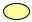 |
| rectangle | 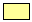 |
| triangle | 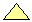 |
| parallelogram | 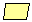 |
| hexagon | 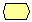 |
| diamond | 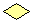 |
| octagon | 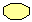 |
| roundrectangle | 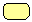 |
| rectangle3d | 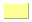 |
| trapezoid | 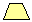 |
| trapezoid2 | 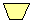 |
| X | X |
| .graph.node.graphics.image | attribute [String] | The URL of the image used for image nodes | X | X |
| .graph.node.graphics.width | attribute [Double] | The stroke width used for the node | X | X |
| .graph.node.graphics.fill | attribute [Color] | The fill color of the node | X | X |
| .graph.node.graphics.outline | attribute [Color] | The stroke color used for the node | X | X |
| .graph.node.graphics.hasFill | attribute [Integer / Boolean] | Whether or not the node has a fill color | X | X |
| .graph.node.graphics.hasOutline | attribute [Integer / Boolean] | Whether of not the node has an outline | X | X |
.graph.node.LabelGraphics level |
| item | type | description | parsed | written |
| .graph.node.LabelGraphics.type | attribute [String] | The content type of the label, either "text" for textual labels or "index_label" for automatic numeric
labels | X | X |
| .graph.node.LabelGraphics.color | attribute [Color] | The text color of the label | X | X |
| .graph.node.LabelGraphics.fill | attribute [Color] | The background color of the label | X | X |
| .graph.node.LabelGraphics.color | attribute [Color] | The text color of the label | X | X |
| .graph.node.LabelGraphics.alignment | attribute [String] | The alignment of multi-line label, either "center", "left" or "right". | X | X |
| .graph.node.LabelGraphics.anchor | attribute [String] | The anchor type of the label, that determines the postition of the label relative to its node. Positions within the node
are "c", "t", "tl", "tr", "l", "r", "bl", "b", br". Positions around the node are "n", "ne", "e", "se", "s", "sw", "w", "nw".
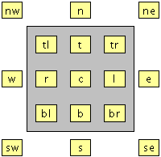
| X | X |
| .graph.node.LabelGraphics.x | attribute [Double] | The absolute x-coordinate of the label.
This value will only be written if the label position does not correspond to a predefined label anchor.
Also, this value will only be read if no label anchor is specified. | X | X |
| .graph.node.LabelGraphics.y | attribute [Double] | The absolute y-coordinate of the label.
This value will only be written if the label position does not correspond to a predefined label anchor.
Also, this value will only be read if no label anchor is specified. | X | X |
| .graph.node.LabelGraphics.fontSize | attribute [Integer] | The size of the label font | X | X |
| .graph.node.LabelGraphics.fontStyle | attribute [String] | The style of the label font, either "plain", "italic" or "bold". | X | X |
| .graph.node.LabelGraphics.fontName | attribute [String] | The logical name of the label font, either "Dialog", "DialogInput", "Monospaced", "Serif", "SansSerif", or
"Symbol". | X | X |
| .graph.node.LabelGraphics.rotationAngle | attribute [Integter] | The rotation angle applied to this label. | X | X |
.graph.edge level |
| item | type | description | parsed | written |
| .graph.edge.source | attribute [Integer] | The id of the source node (.graph.node.id) | X | X |
| .graph.edge.target | attribute [Integer] | The id of the target node (.graph.node.id) | X | X |
| .graph.edge.label | attribute [String] | The textual name of the edge (label) | X | X |
| .graph.edge.graphics | section (single) | The graphical representation of the edge | X | X |
| .graph.edge.edgeAnchor | section (single) | The port definitions | X | X |
.graph.edge.graphics level |
| item | type | description | parsed | written |
| .graph.edge.graphics.type | attribute [String] | The name of the linetype | - | X |
| .graph.edge.graphics.width | attribute [Double] | The stroke width used for the line | X | X |
| .graph.edge.graphics.fill | attribute [String] | The color of the line | X | X |
| .graph.edge.graphics.arrow | attribute [String] | "last" or "first" depending on whether there are arrows at the sourceport and the targetport | X | X |
| .graph.edge.graphics.line | section (single) | The positions of the ports and bends of the edge | X | X |
.graph.edge.graphics.line level |
| item | type | description | parsed | written |
| .graph.edge.graphics.line.point | section (multiple) | A single bend or port | X | X |
.graph.edge.graphics.line.point level |
| item | type | description | parsed | written |
| .graph.edge.graphics.line.point.x | attribute [Double] | The x-coordinate of the point | X | X |
| .graph.edge.graphics.line.point.y | attribute [Double] | The y-coordinate of the point | X | X |
.graph.edge.edgeAnchor level |
| item | type | description | parsed | written |
| .graph.edge.LabelGraphics.type | attribute [String] | The content type of the label, either "text" for textual labels or "index_label" for automatic numeric
labels | X | X |
| .graph.edge.LabelGraphics.color | attribute [Color] | The text color of the label | X | X |
| .graph.edge.LabelGraphics.fill | attribute [Color] | The background color of the label | X | X |
| .graph.edge.LabelGraphics.outline | attribute [Color] | The border color of the label | X | X |
| .graph.edge.LabelGraphics.alignment | attribute [String] | The alignment of multi-line label, either "center", "left" or "right". | X | X |
| .graph.edge.LabelGraphics.model | attribute [String] |
The model of the label, that determines how to interpret the position of a label.
Known models are "center_slider", "side_slider", "six_pos", "three_pos", "two_pos", "free" and "centered".
For each model certain label positions can be assigned (see below)
|
X |
X |
| .graph.edge.LabelGraphics.position | attribute [String] |
The symbolic position of the label, that determines the actual position of the label.
Known positions are "center" "tcentr", "scentr", "shead", "head" "thead", "stail", "tail" and "ttail".
Depicted below is a list of the available edge label models together with their
| 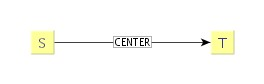 |
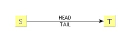 |
| Model CENTERED |
Model TWO_POS |
| 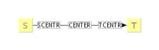 |
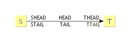 |
| Model THREE_CENTER |
Model SIX_POS |
|
X | X |
| .graph.edge.LabelGraphics.x | attribute [Double] |
The absolute x-coordinate of the label. This value must be used to specify the
position of the label for the label model types "center_slider", "side_slider" and "free".
|
X | X |
| .graph.edge.LabelGraphics.y | attribute [Double] |
The absolute y-coordinate of the label. This value must be used to specify the
position of the label for the label model types "center_slider", "side_slider" and "free".
| 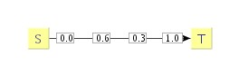 |
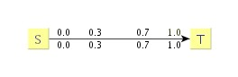 |
| Model CENTER_SLIDER |
Model SIDE_SLIDER |
| 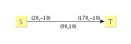 | |
| Model FREE | |
|
X | X |
| .graph.edge.LabelGraphics.fontSize | attribute [Integer] | The size of the label font | X | X |
| .graph.edge.LabelGraphics.fontStyle | attribute [String] | The style of the label font, either "plain", "italic" or "bold". | X | X |
| .graph.edge.LabelGraphics.fontName | attribute [String] | The logical name of the label font, either "Dialog", "DialogInput", "Monospaced", "Serif", "SansSerif", or
"Symbol". | X | X |
| .graph.edge.LabelGraphics.rotationAngle | attribute [Integter] | The rotation angle applied to this label. | X | X |
| .graph.edge.edgeAnchor.xSource | attribute [Double] | the position of the source port x coordinate relative to half its width measured from the center of the node | X | X |
| .graph.edge.edgeAnchor.ySource | attribute [Double] | the position of the source port y coordinate relative to half its height measured from the center of the node | X | X |
| .graph.edge.edgeAnchor.xTarget | attribute [Double] | the position of the target port x coordinate relative to half its width measured from the center of the node | X | X |
| .graph.edge.edgeAnchor.yTarget | attribute [Double] | the position of the target port x coordinate relative to half its height measured from the center of the node | X | X |
Hierarchy Extension |
.graph level |
| item | type | description | parsed | written |
| .graph.hierarchic | attribute [Integer / Boolean] | Predicate, whether the graph may contain subfolders and/or group nodes | - | X |
| .graph.interedge | section (multiple) | An interedge definition | X | X |
.graph.node level |
| item | type | description | parsed | written |
| .graph.node.graphUrl | attribute [String] | Definition of an inner graph, referenced by an URL | X | - |
| .graph.node.graph | section (single) | Inline definition of an inner graph | X | X |
| .graph.node.isGroup | attribute [Integer / Boolean] | Whether or not the node is a group node that can be referenced by other node using the gid attribute | X | X |
| .graph.node.gid | attribute [Integer] | The id of the group node this node belongs to | X | X |
| .graph.node.graph | section (single) | Inline definition of an inner graph | X | X |
.graph.edge level |
| item | type | description | parsed | written |
| .graph.edge.id | attribute [Integer] | A (scope) unique edge id | X | X |
.graph.interedge level |
| item | type | description | parsed | written |
| .graph.interedge.sourcePath | attribute [String] | The relative path of node ids (.graph.node.id), separated by ':' to the real source node | X | X |
| .graph.interedge.targetPath | attribute [String] | The relative path of node ids (.graph.node.id), separated by ':' to the real target node | X | X |
| .graph.interedge.representative | attribute [Integer] | The id of the representing edge in this graph (.graph.edge.id) | X | X |